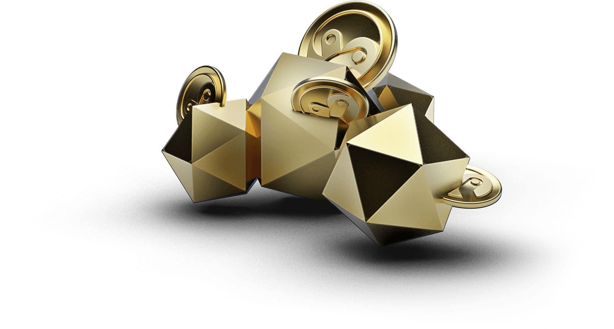

The Solution to Liquidity
for Decentralized Finance.


Mechanisms
of YIN
Active Liquidity Management
Users can choose to subscribe to various CHI that are available via their personal Smart Vaults.

Automatically Re-Invested
Uniswap v3 requires users to manually collect fees in order to re-invest. YIN however collects fees and re-invests for users automatically.
Multi-Party Yield Mining
Managing liquidity in YIN not only earns fees and additional YIN for users, but also allows you to access Uniswap v3 mining cooperatives audited by YIN for reliable so users can reap even more benefits.
